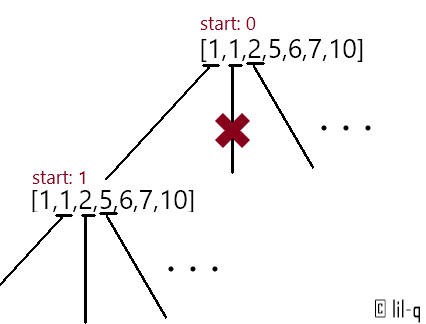

“想回到过去，试着让故事继续”
回溯
回溯（backtracking）是暴力搜索法中的一种。
对于某些计算问题而言，回溯法是一种可以找出所有（或一部分）解的一般性算法，尤其适用于约束满足问题。
约束满足问题：在解决约束满足问题时，我们逐步构造更多的候选解，并且在确定某一部分候选解不可能补全成正确解之后放弃继续搜索这个部分候选解本身及其可以拓展出的子候选解，转而测试其他的部分候选解。
回溯法采用试错的思想，它尝试分步的去解决一个问题。在分步执行的过程中，当它通过尝试发现现有的分步答案不能得到有效的正确的解答的时候，它将撤销上一步甚至是上几步的计算，再通过其它的可能的分步解答再次尝试寻找问题的答案，找到答案即算法运行至终止条件。
回溯法通常用最简单的递归方法来实现，在反复重复上述的步骤后可能出现两种情况：
- 找到一个可能存在的正确的答案
- 在尝试了所有可能的分步方法后宣告该问题没有答案
在最坏的情况下，回溯法会导致一次复杂度为指数时间的计算。
典型的回溯
leetcode 46. 全排列：给定一个没有重复数字的序列，返回其所有可能的全排列。
示例:
输入: [1,2,3]
输出:
[
[1,2,3],
[1,3,2],
[2,1,3],
[2,3,1],
[3,1,2],
[3,2,1]
]
用比较通用的回溯算法可以这样解答：
class Solution:
def permute(self, nums: List[int]) -> List[List[int]]:
size = len(nums)
res = []
# 记录已经选择过的数
visited = set()
def backtrack(numList, visited):
# 当所有数字都选完了，终止
if len(visited) == size:
res.append(numList[:]) # 注意深拷贝和浅拷贝的问题
return
# 遍历所有可能的选择
for i in range(size):
# 如果这个数已在前面出现过了，跳过
if i in visited: continue
visited.add(i)
numList.append(nums[i])
# 递归
backtrack(numList,visited)
# 撤销对临时数组和visited的操作
numList.pop()
visited.remove(i)
backtrack([], visited)
return res
全排列问题能很好的体现回溯的特点：
- 试错：判断当前数是否在前面出现过
- 分步：遍历所有数
- 执行：添加一位数字，并记录该数字为以访问
- 撤销：推出递归后需要撤销之前的改动以安全地进入下一个循环
- 终止条件：所有数都已遍历，或者临时数组长度等于原数组
八皇后问题
在经典的教科书中，八皇后问题展示了回溯法的用例。
八皇后问题是一个以国际象棋为背景的问题：如何能够在8×8的国际象棋棋盘上放置八个皇后，使得任何一个皇后都无法直接吃掉其他的皇后？为了达到此目的，任两个皇后都不能处于同一条横行、纵行或斜线上。

上图就是其中的一个解，八个皇后在8x8棋盘上共有4,426,165,368（）种摆放方法，但只有92个互不相同的解。如果将旋转和对称的解归为一种的话，则一共有12个独立解。wiki有完整解
N皇后
leetcode 51. N皇后是八皇后问题的推广：如何将 n 个皇后放置在 n×n 的棋盘上，并且使皇后彼此之间不能相互攻击。
给定一个整数 n，返回所有不同的 n 皇后问题的解决方案。
每一种解法包含一个明确的 n 皇后问题的棋子放置方案，该方案中 ‘Q’ 和 ‘.’ 分别代表了皇后和空位。
示例:
输入: 4
输出: [
[".Q..", // 解法 1
"...Q",
"Q...",
"..Q."],
["..Q.", // 解法 2
"Q...",
"...Q",
".Q.."]
]
解释: 4 皇后问题存在两个不同的解法。
对于较为复杂的问题，我们可以用函数来封装若干步骤，比如试错、执行和撤销。
class Solution:
def solveNQueens(self, n: int) -> List[List[str]]:
# 储存已有皇后的列
visited_c = [False] * n
# 储存已有皇后的/对角线
visited_u = [False] * (2 * n - 1)
# 储存已有皇后的\对角线
visited_d = [False] * (2 * n - 1)
# 储存所有皇后的列信息
queens = []
res = []
# 试错
def isValid(i, j):
return not (visited_c[j] or visited_u[i + j] or visited_d[i - j])
# 执行
def place_queen(i, j):
queens.append(j)
visited_c[j] = True
visited_u[i + j] = True
visited_d[i - j] = True
# 撤销
def remove_queen(i, j):
queens.pop()
visited_c[j] = False
visited_u[i + j] = False
visited_d[i - j] = False
# 输出结果
def checkerboard():
tmp = []
for j in queens:
tmp.append('.' * j + 'Q' + '.' * (n - j - 1))
res.append(tmp)
def back_track(i=0):
# 终止条件
if i == n:
checkerboard()
return
for j in range(n):
if not isValid(i, j):
continue
place_queen(i, j)
back_track(i + 1)
remove_queen(i, j)
back_track()
return res
全排列和N皇后其实是相似的，两者的不同点在于，全排列是处理一维数组，N皇后是处理二维数组。这一点具体体现在两者在处理分布时的不同，全排列递归的深度是N次，每次分布都是遍历数组中所有数；N皇后递归的深度只有两次，这是由每行每列只能有一个皇后，所以第一个循环是遍历行，对每一行执行第二个循环——遍历列。
N皇后在处理试错时的条件相对苛刻一些，但是对角线这个条件其实可以简化：
对于所有的主对角线有
行号 + 列号 = 常数，对于所有的次对角线有行号 - 列号 = 常数.
代码中我们用visited_u记录主对角线，用visited_d记录次对角线。
回溯算法的一些细节
leetcode 10. 正则表达式匹配
给你一个字符串 s 和一个字符规律 p，请你来实现一个支持 ‘.’ 和 ‘*’ 的正则表达式匹配。
‘.’ 匹配任意单个字符
‘*’ 匹配零个或多个前面的那一个元素
所谓匹配，是要涵盖整个字符串 s 的，而不是部分字符串。
说明:
s 可能为空，且只包含从 a-z 的小写字母。
p 可能为空，且只包含从 a-z 的小写字母，以及字符 . 和 *。
class Solution:
def isMatch(self, s: str, p: str) -> bool:
size_s = len(s)
size_p = len(p)
def backtrack(i, j):
# 终止条件
if j >= size_p:
if i >= size_s:
return True
else:
return False
# 判断第一位是否配对
first_match = i < size_s and (s[i] == p[j] or p[j] == '.')
# 第二位存在且第二位是'*'
if j + 1 < size_p and p[j + 1] == '*':
if first_match:
return backtrack(i + 1, j) or backtrack(i, j + 2) # 注意这里才是分步
else:
return backtrack(i, j + 2)
# 第二位不是'*'或不存在
else:
return first_match and backtrack(i + 1, j + 1)
return backtrack(0, 0)
正则表达式前两题不同之处在于，终止条件不是单一的处理，而是需要判断TrueorFalse。分步不再是循坏，而是分为两个情况讨论——‘*’前面的字母不出现和出现若干次。
注意：一般这类判断是否可行的题都是判断成功
return True，判断失败就继续运行，但是这里可以写return False。原因在于错误的分支被or语句截断了。
没有执行和撤销的过程，因为参数直接传入递归函数，对当前函数内不产生影响。下面一个例子也是这种情况。
leetcode 22. 括号生成：给出 n 代表生成括号的对数，请你写出一个函数，使其能够生成所有可能的并且有效的括号组合。
class Solution:
def generateParenthesis(self, n: int) -> List[str]:
res = []
def backtrack(l, r, s):
if not r:
res.append(s)
return
if l > 0:
backtrack(l - 1, r, s + '(')
if l < r:
backtrack(l, r - 1, s + ')')
backtrack(n, n, '')
return res
leetcode 40. 组合总和 II
给定一个数组 candidates 和一个目标数 target ，找出 candidates 中所有可以使数字和为 target 的组合。
说明：
- 所有数字（包括目标数）都是正整数。
- candidates 中的每个数字在每个组合中只能使用一次。
- 解集不能包含重复的组合。
示例：
输入: candidates = [10,1,2,7,6,1,5], target = 8,
所求解集为:
[
[1, 7],
[1, 2, 5],
[2, 6],
[1, 1, 6]
]
当对选值有特殊要求时，分布就变得复杂一些了。
class Solution:
def combinationSum2(self, candidates: List[int], target: int) -> List[List[int]]:
res = []
candidates.sort()
size = len(candidates)
def backtrack(start, num_sum, nums):
if num_sum > target:
return
if num_sum == target:
res.append(nums)
# start保证了前面的元素不会再选取
for i in range(start, size):
# 这一步是关键，确保了若干个相同元素都在前面
if i > start and candidates[i] == candidates[i - 1]:
continue
backtrack(i + 1, num_sum + candidates[i], nums + [candidates[i]])
backtrack(0, 0, [])
return res
原理如下图：

备忘录
简单回溯法的时间复杂度通常是指数级别的。比如正则表达式使用回溯法求解的时间复杂度为，T 和 P 分别表示匹配串和模式串的长度，2则是因为当出现*时，我们分两步试错。
N皇后问题的时间复杂度为，假设N足够大，第一个皇后有N种可能，第二个有N-2或N-3种可能，第三个有N-4、N-5或N-6种可能……总的来说时间复杂度是。
实际上，回溯法的很多递归都是重复的，引用备忘录可以在递归到重复的情况时，直接读取备忘录中的值，而不再执行一次深度可能很深的递归。下面是备忘录的一个例子：
leetcode 44. 通配符匹配
给定一个字符串 (s) 和一个字符模式 (p) ，实现一个支持 ‘?’ 和 ‘*’ 的通配符匹配。
‘?’ 可以匹配任何单个字符。
‘*’ 可以匹配任意字符串（包括空字符串）。
两个字符串完全匹配才算匹配成功。
说明:
s 可能为空，且只包含从 a-z 的小写字母。
p 可能为空，且只包含从 a-z 的小写字母，以及字符 ? 和 *。
示例 1:
输入:
s = "aa"
p = "a"
输出: false
解释: "a" 无法匹配 "aa" 整个字符串。
简单地通过一个dict来做备忘录：
class Solution:
def isMatch(self, s: str, p: str) -> bool:
size_s = len(s)
size_p = len(p)
memo = {} # 备忘录
def backtrack(i, j):
if (i,j) in memo:
return memo[(i, j)]
else:
tmp = False
if j == size_p:
if i == size_s: # 注意：这里如果不成立直接返回tmp的初始值False
tmp = True
elif p[j] == '*':
if i < size_s:
tmp = backtrack(i, j + 1) or backtrack(i + 1, j)
else:
tmp = backtrack(i, j + 1)
else:
if i < size_s and (s[i] == p[j] or p[j] == '?'):
tmp = backtrack(i + 1, j + 1)
memo[(i, j)] = tmp
return memo[(i, j)]
return backtrack(0, 0)
除了自己创建备忘录，还可以使用python中的装饰器@functools.lru_cache()将函数值存在缓存中。
import functools
class Solution:
def isMatch(self, s: str, p: str) -> bool:
size_s = len(s)
size_p = len(p)
@functools.lru_cache(maxsize=None, typed=False) # 递归函数前面加修饰器
def backtrack(i, j):
if j == size_p:
if i == size_s:
return True
else :
return False
if p[j] == '*':
if i < size_s:
return backtrack(i, j + 1) or backtrack(i + 1, j)
else:
return backtrack(i, j + 1)
else:
if i < size_s and (s[i] == p[j] or p[j] == '?'):
return backtrack(i + 1, j + 1)
else: return False
return backtrack(0, 0)
加上备忘录的回溯和动态规划似乎很相似，我会在这里探究一下两者的区别。
剪枝
剪枝，顾名思义，就是删去一些不重要或无用的节点，来减小计算或搜索的复杂度。使用备忘录其实也可以看成剪枝，因为重复的计算是无意义的。对于特定的问题，可以之间从算法的角度剪枝，如下面的例子：
leetcode 60. 第k个排列
给出集合 [1,2,3,…,n]，其所有元素共有 n! 种排列。
按大小顺序列出所有排列情况，并一一标记，当 n = 3 时, 所有排列如下：
"123""132""213""231""312""321"
给定 n 和 k，返回第 k 个排列。
说明：
- 给定 n 的范围是 [1, 9]。
- 给定 k 的范围是[1, n!]。
示例:
输入: n = 3, k = 3
输出: "213"
这题使用回溯法时间复杂度很高，挖掘其数学规律可以减少很多运算，比如我们在确定第一个数为1时，剩下的数共有(n-1)!种可能的排列，如果k > (n-1)!，那么第一个数一定大于1。以此类推我们可以确定每个位置的数。
class Solution:
def getPermutation(self, n: int, k: int) -> str:
# 求阶乘
def fact(n):
out = 1
while n:
out *= n
n -= 1
return out
def backtrack(remainder, m, visited, permute):
if m < 0:
return permute
for i in range(1, n + 1):
if i in visited:
continue
if remainder - fact(m) > 0:
remainder -= fact(m)
continue
visited.add(i)
return backtrack(remainder, m-1, visited, permute + str(i))
return backtrack(k, n - 1, set(), '')
这道题通过剪枝甚至已经不需要回溯到之前的状态，通过递归直接就得到答案了。那也许意味着，有更直接的解法。实际上，这正是康托展开的原理。
class Solution(object):
def getPermutation(self, n, k):
res = ''
nums = [str(i+1) for i in range(n)]
factor = [1, 1, 2, 6, 24, 120, 720, 5040, 40320, 362880] # 手动输入n!，也可以写函数现场算
k -= 1 # 注意
for i in range(n-1, -1, -1):
n, k = divmod(k, factor[i])
res += nums.pop(n)
return res
参考
- https://zh.wikipedia.org/wiki/%E5%85%AB%E7%9A%87%E5%90%8E%E9%97%AE%E9%A2%98
- https://zh.wikipedia.org/wiki/%E5%9B%9E%E6%BA%AF%E6%B3%95
本博客所有文章除特别声明外，均采用 CC BY-SA 3.0协议 。转载请注明出处！